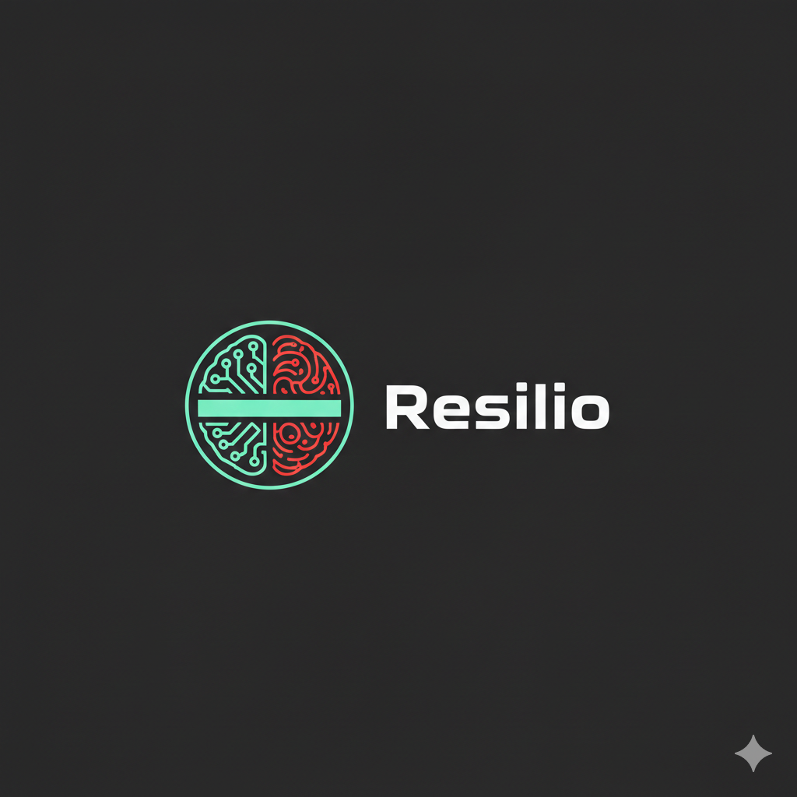
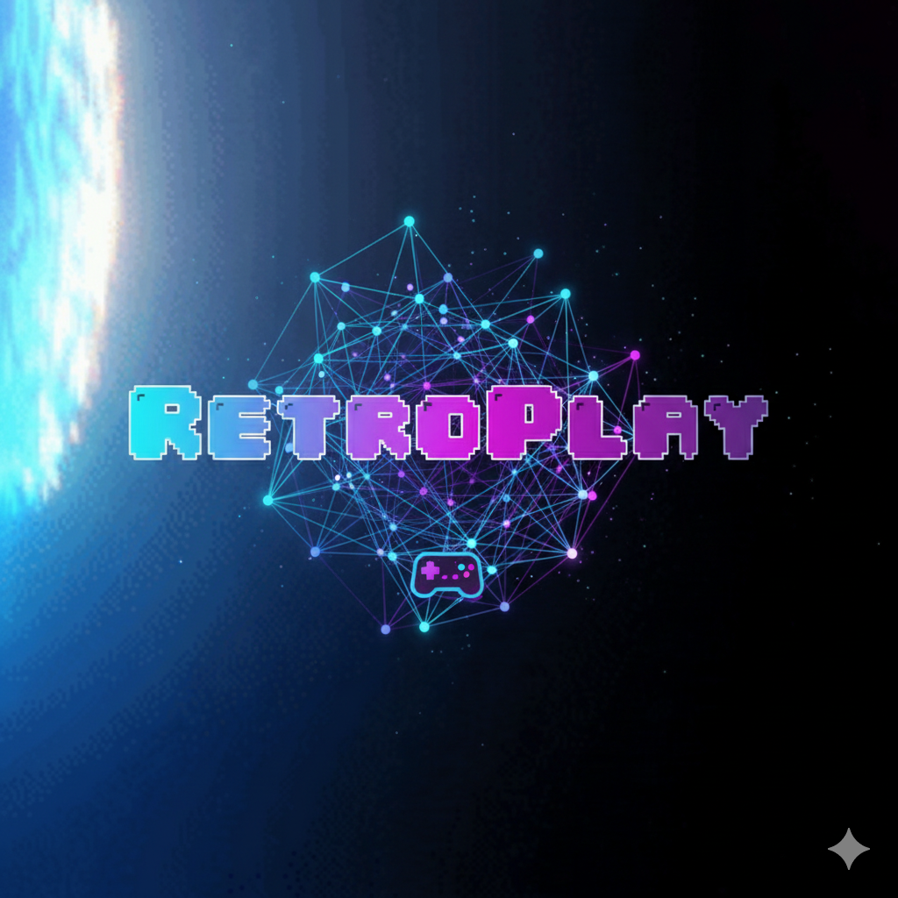

Estudiante de Desarrollo de aplicaciones web
Python -- MySQL -- HTML -- CSS -- JavaScript

Mi app de psicología y neurociencia basada en el test BAT-12.
Python · Flask · MySQL
Tienda de alquiler de juegos y consolas retro.
PHP · Html · Css · MySQL · JavaScript